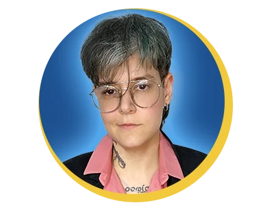
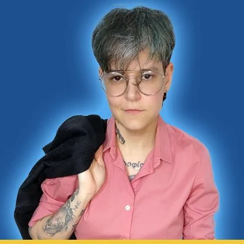
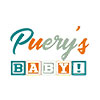

Abradif · Ford
14.099leads gerados com CPL 40% menor
R$47CPL final
27,5 miimpressões
7regionais
Transformo verba de mídia em leads qualificados e receita, com mídia paga, CRM e automação com IA para marcas que exigem resultado mensurável.
Especialista desde 2017 · Certificada Google e LinkedIn Ads

Seis contas, de e-commerce a rede de concessionárias. Toque em “Ver case completo” para ler o desafio, a estratégia e os resultados.
Olho o funil inteiro: campanha, página, CRM e painel de resultados falando a mesma língua.
Estrutura, otimização e escala com foco em CPL, CPA e ROAS.
Réguas de relacionamento, nutrição e classificação MQL/SQL, alinhando marketing e comercial.
Rastreamento correto e relatórios que o cliente entende e usa para decidir.
SEO e GEO, agentes de IA e automações para ganhar velocidade sem perder controle.

Sou gestora de marketing de performance, especialista em mídia paga desde 2017 e com mais de 10 anos de mercado, conectando mídia, CRM e dados à receita. Comecei em social media e criação, passei por direção de arte e de criação, conduzindo também estratégia e mídia para marcas como Ford, Mitsubishi e Lexus, Travelex Confidence, Morana, Casa da Bebida, além de e-commerces e negócios locais.
Concluí o MBA em Marketing B2B e Internacional e curso especialização em Inteligência Artificial e Machine Learning, aplicando IA e automação à gestão de campanhas. Atuo como PJ em white label, prestando serviço para agências e empresas, 100% remoto, a partir de Goiânia, GO.
Clientes e marcas atendidos em cada etapa da carreira.
Planejamento estratégico e gestão de campanhas em mídia paga para Toyota, Mitsubishi, Lexus, Travelex Confidence, Dimep e outros.
Planejamento estratégico e gestão das equipes de atendimento, criação, social media e mídia paga.
Gestão de campanhas em Google, Meta, LinkedIn, Pinterest e outras para BRZ Construtora, EPO, AMPLA e VLI.
Peças gráficas e digitais, edição de vídeo e revisão de conteúdos para campanhas de marketing político, no formato freelancer.
Campanhas programáticas e ads, relatórios e planejamento para Biostévi, Bali Hai, Mafra, Editora Quadrante, Aposta Ganha e outros.
Campanhas ads e régua de CRM para Morana e Morana Franquias, Purpose Clothing, Balone Jóias, Sterna Café e outros.
Campanhas em Google Ads e Meta para médios e grandes clientes como Ford (Abradif), Bompreço, Elmo Construtora e Prefeitura de Anápolis (GO).
Estratégia de funil e régua de CRM, e-mail marketing, SMS e push, script de vendas e análise de dados.
Produção de conteúdo (copy e criativos), criação e monitoramento de campanhas de mídia paga e relatórios de desempenho.
Criação de conteúdo, funil de nutrição, conversão e estímulo de leads.
Google Ads (Search), YouTube Ads, DV360 e mensuração com Analytics e Looker Studio.
Gestão de liderança de equipes com foco em otimização de vendas.
Planejamento e aplicação de estratégias com foco em vendas B2B.
Estratégias de marketing digital e inteligência de mercado.
Otimizações para buscas aplicadas à performance digital.
Palavras de clientes e parceiros sobre entrega, responsabilidade e resultado.
“O dobro no volume de leads já na primeira campanha.”
A Ana nos transmitiu segurança e responsabilidade desde a primeira reunião. Ela foi responsável pela mídia de 4 escolas, sendo 2 locais (Goiânia) e outras 2 de Brasília e nos trouxe resultados (o dobro no volume de leads) ainda na primeira campanha, comprovando que seu trabalho é excepcional.
Carlos EduardoGerente de Negócios · Studio Que
“Batemos faturamento recorde.”
Alcançamos excelentes resultados com as estratégias propostas pela Ana. A implementação gradual de orçamento, com gestão responsável, trouxe ganho de receita e ROAS para a loja. Batemos faturamento recorde, principalmente com as atualizações e otimizações aplicadas. Profissional altamente qualificada.
Paulo MirandaConsultor de Marketing · Editora Quadrante
“Parceria sólida, com entrega pontual e resultado.”
Uma das minhas maiores dores nesses 14 anos como empresário era achar uma profissional competente. Há 4 anos encontramos a Ana e tivemos uma parceria sólida e com entrega pontual, com resultado e de qualidade nos serviços.
Bráulio FreireGestor · Ampla Comunicação
“Engajada, eficiente e rápida nas soluções.”
A Ana é uma profissional de alta qualidade pois ela analisa a questão do cliente e busca os melhores caminhos e principalmente chega nos resultados. Sabe ouvir e ponderar ao mesmo tempo as estratégias e sempre nos oferece oportunidades de negócios visando sua amplitude. Profissional engajada, eficiente e rápida nas soluções.

Stefania de PaulaGestora · Puery's By Baby
“Dedicada, estudiosa e sempre prestativa.”
Como sócio da New Comunicação, tenho o prazer de recomendar os serviços exemplares da Ana D'avilla como gestora de tráfego. Sua expertise e dedicação foram fundamentais para o sucesso de nossos projetos. Profissional dedicada, estudiosa e sempre prestativa. Não hesito em sugerir seus serviços a outras empresas e agências de publicidade em busca de resultados excepcionais.
José de Almeida Alves NetoSócio e Diretor Criativo · New Comunicação
Disponível para contratos PJ, com responsabilidade.